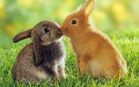

-
A rabbit’s teeth never stop growing! Instead,
they’re gradually worn down as the rabbit chews on grasses,
wildflowers and vegetables meaning they never get too long.
-
Rabbits’ eyes are on the sides of their head,
meaning they can see almost all the way around them.
This helps them to keep a close watch for predators
while they’re going about their business!
-
A rabbit’s best feature?
Their long ears!
Growing up to 10 centimetres in length,
rabbits can turn their ears by 180 degrees,
keeping a careful listen out for predators.
-
One of the world’s best-known rabbits
is the Warner Bros cartoon character,
Bugs Bunny — who’s often seen munching on a carrot!
In fact, carrots aren’t a natural part of a rabbit’s diet
and can give bunnies an upset stomach if they eat too many.
-
Rabbits are very effective baby-makers!
Mother rabbits are pregnant for between 28-31 days,
giving birth to up to 14 baby rabbits called kittens in a single litter.
There are over 45 million rabbits in the UK alone!